무선설비기사 (2008-03-02 기출문제)
1과목: 디지털 전자회로
1. 다음 중 그림과 같은 정류회로에서 부하저항 의 소비전력[W]은 약 얼마인가?(단, 입력전압 120V, 부하저항 240, 다이오드는 이상적이고, 권선비는 1차측 : 2차측 = 2:1이다.)
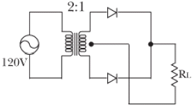
- 0.52
- 1.74
- 3.04
- 9.55
(정답률: 65%)

2. 다음 논리회로의 출력(X)이 옳은 것은?
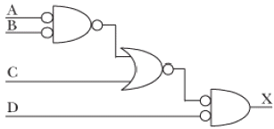
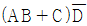
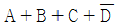
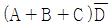
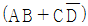
(정답률: 50%)
3. RC 결합 CE 증폭기의 저주파 응답에서 결합콘덴서의 역할에 대한 설명으로 가장 적합한 것은?
- 결합콘덴서의 용량은 소신호에 대한 거의 단락상태가 되도록 커야 한다.
- 결합콘덴서는 입력의 직류성분만을 통과시켜야 한다.
- 입력신호의 진폭이 커짐에 따라 콘덴서의 용량도 증가하여야 한다.
- 입력주파수가 작아짐에 따라 콘덴서의 용량도 감소해야한다.
(정답률: 47%)
4. 다이오드 직선검파회로에서 변조도 50[%], 진폭
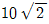
[V]인 AM피변조파가 인가되었을 때 부하저항 RL 에 나타나는 출력전압의 실효치는 몇 [V]인가? (단, 검파효율은 80[%]라고 한다.)- 10
- 8
- 6
- 4
(정답률: 19%)
5. 증폭기의 입력 임피던스를 증가시키고 출력 임피던스를 감소시키기 위해서는 어떤 방법의 부궤환이 적합한가?
- 출력전압을 샘플링해서 입력신호와 직렬로 가한다.
- 출력전류를 샘플링해서 입력신호와 직렬로 가한다.
- 출력전압을 샘플링해서 입력신호와 병렬로 가한다.
- 출력전류를 샘플링해서 입력신호와 병렬로 가한다.
(정답률: 74%)
6. 전압이득이 60[dB]인 저주파 전압증폭기가 10[%]의 왜율을 가지고 있을 때 이것을 0.1[%]정도로 개선하는 방법은?
- 궤환율이 약 20[dB]인 부궤환을 걸어준다.
- 궤환율이 약 20[dB]인 정궤환을 걸어준다.
- 증폭도를 10[dB] 낮게 한다.
- 전압변동율을 1/10로 낮게 한다.
(정답률: 59%)
7. 다음 중 트랜지스터 접지 방식에서 전류이득과 전압이 득이 모두 큰 것은?
- 이미터접지
- 베이스접지
- 컬렉터접지
- 이미터폴로워
(정답률: 66%)
8. 다음 그림의 연산증폭기 회로에서 출력 V0가 옳은 것은?
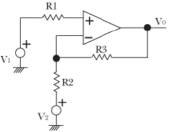
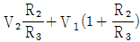
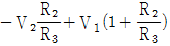
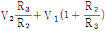
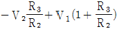
(정답률: 58%)
9. I = I0(1+msinWmt)sinWct인 피변조파의 전류가 임피던스 값이 R인 회로에 흐를 때 상측대파의 평균전력은? (단, m은 변조도이다.)
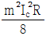
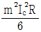
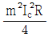
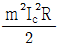
(정답률: 58%)
10. 다음 중 그림의 회로에서 입력전압 Vi 와 출력전압 Vo 의 전달 특성은?
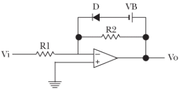
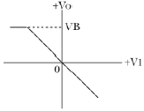
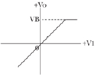
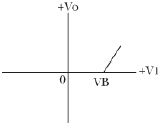
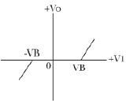
(정답률: 43%)
11. 다음 이상 발전기의 발진주파수는 약 몇 [khz]인가? (단, R=4[kΩ], C=0.01[μF])
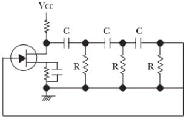
- 1.6
- 2.3
- 3.4
- 4.2
(정답률: 50%)
12. 전압 증폭회로에서 대역폭을 4배로 하려면 증폭 이득을 약 몇[dB]감소시켜야 하는가?
- 0.25[dB]
- 4[dB]
- 6[dB]
- 12[dB]
(정답률: 30%)
13. 그림과 같은 비안정 멀티바이브레이터의 설명으로 틀린 것은?
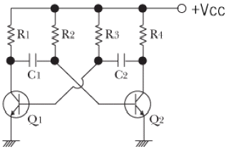
- Q1이 OFF일 때, Q2는 포화상태이다.
- Q1이 포화일 때, Q2도 포화를 유지한다.
- 구형파를 발생하는 회로이다.
- C1및 C2의 크기에 따라 주파수가 결정된다.
(정답률: 58%)
14. 그림과 같이 T형 플립플롭을 접속하고 첫 번째 플립플롭에 1000[Hz]의 구형파를 입력하면 최종 플립플롭에서 출력단의 주파수는[Hz]는?
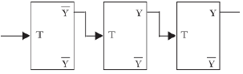
- 1000
- 500
- 250
- 125
(정답률: 72%)
15. 그림(a)의 회로에 그림(b)와 같은 전압이 인가될 때 정상상태에서의 Vo는?
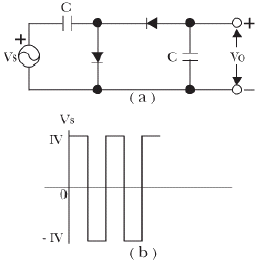
- 1[V]의 진폭을 갖는 양의 펄스
- 1[V]의 진폭을 갖는 음의 펄스
- +1[V]의 일정한 DC전압
- -2[V]의 일정한 DC전압
(정답률: 71%)
16. 다음 3변수 카르노도가 나타내는 함수로 옳은 것은?
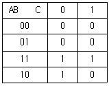
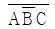
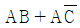
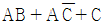
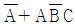
(정답률: 62%)
17. 그림과 같이 해독기에 BCD 입력이 가해지고 있다. 해독기는 BCD 입력이 1001(ABCD)인 때만 출력이 1을 나타낸다고 할 경우 다음 중 출력 Y를 불대수식으로 표현하면?
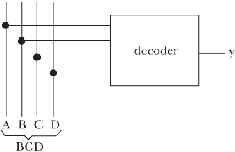
- AD
- AB
- AC
- BCD
(정답률: 75%)
18. 다음 중 신호의 지연시간이 가장 짧은 것은?
- TTL
- ECL
- CMOS
- RTL
(정답률: 56%)
19. NOR게으트로 구성된 RS 플립플롭에서 이전의 상태를 유지하기 위해서는 RS가 어떤 경우일 때인가?
- RS=01
- RS=11
- RS=10
- RS=00
(정답률: 65%)
20. MS플립플롭의 진리표에서 Jn = 1, Kn = 0 에서 클럭펄스를 인가 할 때 출력 Qn+1의 값은?
- Qn
- 0
- 1
- 부정
(정답률: 69%)
2과목: 무선통신 기기
21. 다음 중 컬렉터 변조의 특징에 대한 설명으로 적합하지 않은 것은?
- 직선성이 우수하여 일그러짐이 적다.
- 피변조기를 C급으로 사용함으로 효율이 높다
- 일반적으로 중간전력 증폭부에서 변조한다.
- 방송용 송신기 등 대전력 송신기에 적합하다.
(정답률: 45%)
22. 다음 중 FM송신기의 주파수 특성을 측정하는데 있어서 필요한 계측기가 아닌 것은?
- 감쇠기
- FM 변조도계
- 고역통과필터
- 저주파발진기
(정답률: 71%)
23. 전계강도 측정기로 매우 강한 전계강도를 측정할 때 오차가 생기는 이유로 가장 타당한 것은?
- 전원전압의 변동
- 수신기 내부의 잡음
- 수신기 증폭부의 비직선성
- 수신기의 주파수 특성 불량
(정답률: 77%)
24. 다음 중 전원회로의 잡음대책으로 가장 적합하지 않은 것은?
- 잡음 제거용 필터회로를 사용한다.
- 서지(surge) 흡수 소자를 사용한다.
- 실드선을 사용한다.
- 전원회로의 전압을 높게 한다.
(정답률: 85%)
25. 레이터의 최대 탐지거리를 증대시키기 위한 방법에 대한 설명으로 적합하지 못한 것은?
- 공중선을 높게 설치한다.
- 수신기 감도를 증대시킨다.
- 펄스 반복 주파수(PRF)를 높인다.
- 최대 탐지거리를 2배로 하기 위해서는 송신전력을 16배로 증가시켜야 한다.
(정답률: 18%)
26. 레이더에서 발사된 펄스 전파가 8[μs]후에 목표물에서 반사되어 되돌아 왔다. 목표물까지의 거리는?
- 2400[m]
- 1200[m]
- 800[m]
- 600[m]
(정답률: 78%)
27. 다음 중 진폭변조(AM) 방식이 아닌 것은?
- DSB
- SSB
- VSB
- PSK
(정답률: 82%)
28. 잔류측파대 통신방식에 관한 설명 중 적합하지 않은 것은?
- 주파수 대역폭은 DSB와 동일하다.
- SSB 와 DSB의 장점을 살린 절충형이다.
- DSB 보다 선택성 페이딩의 영향을 덜 받는다.
- 텔레비전 방송의 영상신호 변조방식으로 사용되고 있다.
(정답률: 71%)
29. 무선송신기에서 발생하는 스퓨리어스 복사를 줄이는 방법으로 적합하지 않은 것은?
- 전력 증폭단을 push-pull로 구성한다.
- 전력 증폭기의 유통각을 작게 한다.
- 고 저조파에 대한 트랩(trap)회로를 설치한다.
- 출력 결합회로의 Q를 높인다.
(정답률: 53%)
30. 일반적으로 통신용 수신기에서 통과 대역폭을 선택도 특성 곡선의 최소점(0 [dB])에서 몇 데시벨[dB]까지 감쇠되는 지점의 대역폭으로 정하고 있는 가?
- 3[dB]
- 6[dB]
- 9[dB]
- 12[dB]
(정답률: 83%)
31. 다음 중 엘리어싱(Aliasing)현상을 제거하는 방법으로 가장 적합한 것은?
- 신호 샘플링은 Nyquist 주파수 이하로 한다.
- 고 충실도를 위하여 음성신호를 원음대로 샘플링 한다.
- 샘플링할 신호를 LPF 등을 이용하여 대역폭을 제한한다.
- 신호의 잡음을 최대한 억제한다.
(정답률: 79%)
32. 수퍼 헤테로다인 수신기의 선택도를 개선하는 방법으로 적합하지 않은 것은?
- 고주파 증폭단을 둔다.
- 중간주파 증폭단을 늘린다.
- 동조회로의 Qfmf 크게 한다.
- 공중선회로 밀결합 한다.
(정답률: 74%)
33. 다음 중 SSB 신호를 발생하는 방법에 해당하지않는 것은?
- 필터법
- 웨버법
- S 미터법
- 위상천이법
(정답률: 78%)
34. 수신주파수가 700[kHz]이고, 중간주파수가 455[kHz]인 수퍼 헤테로다인 수신기가 10[kHz]의 대역폭을 갖는 신호를 수신할 때 영상신호의 주파수는 몇 [kHz]인가?
- 345[kHz]
- 1155[kHz]
- 1610[kHz]
- 1720[kHz]
(정답률: 79%)
35. GPS위치 측정 시 오차 인자 중 영향력(오차범위)이 가장 큰 것은?
- 대류권의 영향
- 전리층의 영향
- 위성의 시계 오차
- 전파경로에 따른 오차
(정답률: 57%)
36. 다음 디지털 변조 방식 중 제한된 전송 대역 내에서 고속도의 데이터 전송에 가장 적합한 방식은?
- ASK
- FSK
- BPSK
- QAM
(정답률: 78%)
37. 최대 주파수편이가 75[kHz]이고, 변조주파수가 15[kHz]인 FM에서 전송 대역폭은 약 몇 [kHz]인가?
- 75
- 90
- 180
- 270
(정답률: 81%)
38. OFDM에 대한 설명 중 적합하지 않은 것은?
- 주파수 오프셋 등의 다양한 오류에 둔감 하다.
- 멀티패스 및 이동수신환경에서 우수한 성능을 발휘한다.
- 각각의 부반송파들은 스펙트럼상에서 직교성을 유지하는 최소 주파수 간격으로 중첩을 허용하여 전송할 수 있으므로 스펙트럼 효육을 극대화할 수 있다.
- 다중반송파 전송기법의 일종으로 직렬로 입력되는 고속 데이터열을 다수의 부반송파에 실어 전송하는 변조기법이다.
(정답률: 67%)
39. FM송신기에서 IDC 회로가 하는 역할에 대한 설명으로 가장 적합한 것은?
- 수정 발진기를 제어하는 회로이다.
- 신호를 증폭하여 위상 복주부에 전달하는 역할을 한다.
- 입력 신호가 일정한 진폭을 넘을 때 진폭을 제한하는 역할을 한다.
- 음성 신호의 높은 주파수 부분을 크게 변조하여 수신시 S/N비를 개선하는 회로이다.
(정답률: 65%)
40. 변조도가 1일 DSB파를 제곱 검파하면 왜율은 약 몇 [%]인가?
- 10
- 20
- 25
- 35
(정답률: 74%)
3과목: 안테나 공학
41. 도파관의 전기적 특성에 대한 설명 중 틀린 것은?
- 도파관은 고역통과필터로 작용한다.
- 동축선로 등에 비하여 유전체 손실이 적다.
- 도파관에 전송할 수 있는 파장은 모드에 관계없이 일정하다.
- 관내를 전파하는 전자파의 파장은 자유 공간에서의 파장보다 길다.
(정답률: 73%)
42. 특성 임피던스가 50[Ω]인 급전선에 복사 임피던스가 70+j40[Ω]인 안테나를 연결하였다. 급전선상의 전압 정재파비의 크기는 약 얼마인가?
- 2.1
- 1.5
- 1.2
- 0.5
(정답률: 53%)
43. 주파수 100[MHz]인 반파장 다이폴 안테나의 실표개구 면적은 약 몇 [m2]인가?
- 1.179[m2]
- 2.238[m2]
- 3.256[m2]
- 4.167[m2]
(정답률: 40%)
44. 반파장 다이폴 안테나에 대한 설명 중 틀린 것은?
- 단파(HF)용으로 주로 사용한다.
- 수직형 다이폴에서 수평면 내 지향성을 8자형이다.
- 접지가 불필요하다.
- 중앙에서 급전함으로 전류분포는 다이폴 양끝단에서 가장 낮다.
(정답률: 79%)
45. 등방성 안테나에서 거리 r[m]인 점의 전계강도를 나타내는 식은? (단, pr : 등방성 안테나의 입력전력, r: 안테나로부터 떨어진 거리)
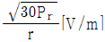
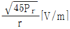
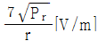
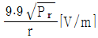
(정답률: 65%)
46. 어떤 접지 안테나의 복사저항이 46[Ω]이고, 손실저항이 4[Ω]이라면 효율은 몇 [%]인가?
- 46[%]
- 50[%]
- 92[%]
- 98[%]
(정답률: 85%)
47. 접지저항이 5[Ω]인λ/4수직접지안테나의 복사능률은 약 몇 [%]인가? (단, 안테나의 저항은 무시한다.)
- 94[%]
- 88[%]
- 80[%]
- 75[%]
(정답률: 73%)
48. Helical 안테나에 대한 설명 중 틀린 것은?
- 나선형 안테나라고도 한다.
- 반사파에 의해서 동작한다.
- 비교적 광대역 특성이 있다.
- 구조가 간단하고 고이득 특성을 갖는다.
(정답률: 62%)
49. 다음 중 2개의 반사판을 갖는 안테나는?
- 첸즈 안테나
- 야기-우다 안테나
- 카세그레인 안테나
- 슈퍼 턴 스타일 안테나
(정답률: 79%)
50. 다음 중 도약거리에 대한 설명으로 옳지 않은 것은?
- 전리층의 겉보기 높이에 비례한다.
- 사용주파수가 높을수록 크게 된다.
- 동일 주파수를 사용할 때 도약거리는 항상 동일하다.
- 첫 번째 반사파가 지표면에 되돌아 온 지점과 송신점간의 거리를 말한다.
(정답률: 75%)
51. 다음 중 유전체 안테나에 대한 설명으로 틀린것은?
- 전송부의 테이퍼는 부엽(side lobe)을 감소시킨다
- 여진부의 테이퍼는 여진부의 복사 지향성을 변화시킨다.
- 유전체중에서의 전파의 위상속도가 자유공간에서보다 빨라지는 것을 이용한다.
- 종단부의 테이퍼는 후단에서의 표면파 반사를 감소시킨다.
(정답률: 57%)
52. 초단파대를 사용할 경우 가시거리 내에서 전계 강도에 영향을 주는 사항이 아닌 것은?
- 복사전력
- 전리층의 높이
- 송수신 안테나 높이
- 송수신 지점간의 거리
(정답률: 65%)
53. 신호주파수가1[MHz]일 때, 특성임피던스 Z0 = 300[Ω]인 동축 급전선과 입력임피던스 R = 200[Ω] 인 안테나 사이에 집중정수회로로 정합시키는 경우 인덕턴스 L은 약 몇[μH]인가?
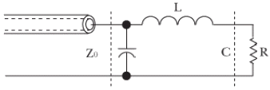
- 11.3[μH]
- 22.5[μH]
- 35.2[μH]
- 50.0[μH]
(정답률: 60%)
54. 다음 중 가장 광대역 안테나에 속하는 것은?
- 대수주기 안테나
- 반파장 안테나
- 루프 안테나
- 웨이브 안테나
(정답률: 75%)
55. 다음 중 공전잡음을 경감시키는 방법으로 가장 적합한 것은?
- 접지안테나를 사용한다.
- 송신출력을 감소시킨다.
- 낮은 주파수를 사용한다.
- 지향성 안테나를 사용한다.
(정답률: 79%)
56. 마이크로스트립 안테나에 대한 설명 중 틀린 것은?
- 안테나 대역폭이 넓다.
- 제작이 간편하고 가격이 싸다.
- 두께가 얇으므로 면에 부착이 쉽다.
- 일반적으로 방사 전력이 작다.
(정답률: 60%)
57. 다음 중 전파예보에서 알아낼 수 없는 것은?
- 전리층 반사파로 통신할 수 있는 가장 높은 주파수를 알 수 있다.
- 조건을 대입하여 LUF를 구할 수 있다.
- 송 수신점과 통신 시각에 따른 최적운용주파수를 구할수 있다.
- 전리층과 대기권의 M곡선을 구할 수 있다.
(정답률: 75%)
58. 다음 중 안테나의 Q를 나타내는 식으로 적합하지 않은 것은? (단, Le는 안테나의 실효인덕턴스, Ce는 실표정전용량, Re는 실표저항임)
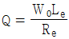
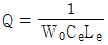
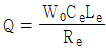
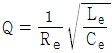
(정답률: 58%)
59. 다음 중 방향 탐지용 안테나로 쓰이지 않는 것은?
- Loop 안테나
- Adcock 안테나
- Beverage 안테나
- bellini-Tosi 안테나
(정답률: 62%)
60. 다음 중 Horn Reflector 안테나의 특징으로 적합하지 않은 것은?
- 개구효율이 낮은 것이 단점이다
- 저잡음 특성이 있다.
- 수즉, 수평, 원편파 모두 사용할 수 있다.
- 매우 광대역이다.
(정답률: 71%)
4과목: 무선통신 시스템
61. 그림과 같은 마이크로파 회선에 A와 B구산의 잡음전력이 -50[dBm], B와 C구간의 잡음전력이 -50[dBm]일 경우 A와 C구간의 잡음전력은 몇 [dBm] 인가?
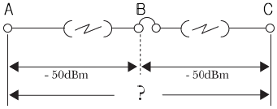
- -44[dBm]
- -47[dBm]
- -49[dBm]
- -50[dBm]
(정답률: 57%)
62. 국내 장거리 마이크로파 통신망에서 가장 많이 사용하는 다이버시티 방식은?
- 편파 다이버시티
- 공간 다이버시티
- 주파수 다이버시티
- 각도 다이버시티
(정답률: 56%)
63. 마이크로파 통신방식에서 FDM 방식과의 비교하여 시분할 다중방식(TDM)의 특징으로 가장 적합한 것은?
- 누화잡음을 적게 할 수 있다.
- 통화로 당 가격이 비싸다
- 통화로 당 점유주파수 대폭이 좁다
- 지연왜곡의 문제가 심각하다.
(정답률: 50%)
64. UHF대를 사용하는 통신망을 설계할 때 치국 계획상 고려해야 할 점과 가장 관계가 적은 것은?
- 총장비이득
- 총경로손실
- 통신망성능
- 전력소모율
(정답률: 69%)
65. 통신위성에 장착하는 안테나 종류에 속하지 않는 것은?
- 파라볼라 안테나
- 카세그레인 안테나
- 혼 안테나
- 무지향성 안테나
(정답률: 66%)
66. 디지털 셀룰러시스템의 다중화방식에 속하지 않는 것은?
- TDMA
- CDMA
- JTACS
- ETDMA
(정답률: 72%)
67. 다음 중 위성통신의 다원접속방식이 아닌 것은?
- 시부날 다원접속
- 주파수분할 다원접속
- 부호분할 다원접속
- 진폭분할 다원접속
(정답률: 53%)
68. 다음 중 CDMA방식을 실현하는 스펙트럼 확산 기술과 관련 없는 것은?
- DS
- FH
- TH
- FFH
(정답률: 50%)
69. UHF대 주파수를 이용한 이동전화 방식에서 도심권의 통화품질이 저하하는 가장 큰 이유는?
- 열잡음 방해
- Impulse에 의한 중단
- 우주잡음
- Multi-path 의한 혼신
(정답률: 60%)
70. 무선통신 시스템에서 Fading margin에 대한 설명으로 가장 적합한 것은?
- 전파의 전파시 발생하는 fading 중 가장 큰 값으로서 시스템 설계시 중요한 값이다.
- 전파의 전파시 발생하는 fading 중 가장 작은 값으로서 시스템 설계시 중요한 값이다.
- 무선통신환경에서 발생하는 frding을 고려한 여유도로서 시스템 설계시 중요한 값이다.
- 무선통신환경에서 발생하는 fading의 최대치를 최소치로 나눈 데이벨 값이다.
(정답률: 60%)
71. 다음 중 위성통신의 특징으로 적합하지 않은 것은?
- 전파의 지연 시간이 있다.
- Scrambling이 불필요 하다.
- 통신망 설정의 신속성, 유연성이 좋다.
- 동일 내용의 정보를 복수지점에서 동시 전송이 가능하다.
(정답률: 75%)
72. 다음 중 종합잡음지수를 가장 효과적으로 개선할 수 있는 것은?
- 저잡음 전치증폭기 사용
- 자동 이득조절기 사용
- 대역통과필터 사용
- 검파기 사용
(정답률: 42%)
73. 디지털 통신시스템을 설계하는 경우 고려해야할 사항이 아닌 것은?
- 최소의 전송전력
- 최소의 심볼에러
- 최대의 채널 대역폭
- 최대의 데이터 전송율
(정답률: 24%)
74. 무선 랜에 관한 국제규격으로 가장 적합한 것은?
- IEEE 802.3
- IEEE 802.4
- IEEE 802.11
- IEEE 802.14
(정답률: 77%)
75. 이동통신시스템에서 캐리어주파수가 900MHz, 차량속도가 80Km/h라 할 때 최대 Doppler Spread는 약 몇 [Hz]인가?
- 63
- 65
- 67
- 69
(정답률: 72%)
76. OSI 7계층 중 하나인 데이터링크계층에서 사용되는 데이터 전송단위는?
- bit
- frame
- packet
- message
(정답률: 62%)
77. OSI 참조 모델의 계층 구조에서 응용 프로세스 간의 통신에 대한 제어 기능을 제공하는 계층은?
- 물리 계층
- 표현 계층
- 세션 계층
- 데이터링크 계층
(정답률: 67%)
78. 무선통신시스템의 유지보수 기능에 해당하지 않는 것은?
- 무선통신망 보안관리 기능
- 무선통신망 상태관리 기능
- 무선통신망 고장관리 기능
- 무선통신망 고객관리 기능
(정답률: 70%)
79. 2.4[GHz] 대역의 주파수를 이용하여 10~100m 범위의 각종 정보통신 가전기기를 연결, 제어하기 위하여 SIG 그룹에서 공동개발한 무선 네트워킹 표준 기술을 의미하는 것은?
- Wibro
- WCDMA
- Home PNA
- Bluetooth
(정답률: 58%)
80. 셀룰러방식에서 주파수 재사용 계수 K가 12일 EO 셀의 반지름이 R이면 주파수 재사용 거리 D는?
- 3.4R
- 4.6R
- 6.0R
- 7.5R
(정답률: 60%)
5과목: 전자계산기 일반 및 무선설비기준
81. 입ㆍ출력 과정에서 CPU의 역할이 가장 큰 방식은?
- Programmed I/O
- Interrupt-Driver I/O
- DMA
- Channel I/O
(정답률: 64%)
82. 데이터의 고속처리를 목적으로 주기억장치와 입출력장치 사이에 있는 입 출력 전용장치는?
- 버터
- 채널
- 캐시
- 포트
(정답률: 44%)
83. 4개의 비트에서 MSB로부터 차례로 8,4,2,1의 가중치를 갖는 코드는?
- BCD 코드
- Access 3코드
- ASCII 코드
- Hamming 코드
(정답률: 80%)
84. 다음과 같은 진리표를 갖는 회로는?
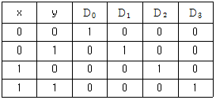
- 비교기
- 멀티플렉서
- 디코더
- 인코더
(정답률: 50%)
85. 병렬 프로세서의 한 종류로 벡터 프로세서에서 많이 사용되는 방식으로 비디오 게임 콘솔이나 그래픽 카드와 같은 분야에 자주 적용되며 MMX에도 사용된 구조는?
- SIMD
- SISD
- MISD
- MIMD
(정답률: 59%)
86. 연산의 속도를 빠르게 하기 위하여 부동 소수점 연산을 전문적으로 수행하는 장치는?
- co-processor
- RAM
- ROM
- USB
(정답률: 78%)
87. 기계어를 기호(symbolic code)로 1 대 1대응시켜 만든 언어는?
- 어셈블리어
- 고급언어
- 컴파일러
- 언어 프로세서
(정답률: 70%)
88. 마이크로 오퍼레이션 중 가장 긴 것의 시간을 해당 마이크로 사이클 타임으로 정의하는 방식을 무엇이라 하는가?
- Fetch Status
- 동기 고정식
- 동기 가변식
- Interrupt Status
(정답률: 65%)
89. 10진수 9를 2진수로 표현할 때, 기수 패리티 코드화한 값으로 옳은 것은?
- 10010
- 10001
- 10011
- 01001
(정답률: 53%)
90. 그레이 코드 10110110을 2진수로 바꾼 것으로 맞는 것은?
- 11011011
- 10101101
- 01001100
- 01101011
(정답률: 70%)
91. 다음 중 인증의 모두가 면제되는 정보통신기기가 아닌 것은?
- 시험연구를 위하여 제조하거나 수입하는 정보통신기기
- 국내에서 판매하지 아니하고 수출전용으로 제조하는 정보통신기기
- 외국으로부터 도임하는 선박 또는 항공기에 설치된 정보통신기기
- 여행자가 판매를 목적으로 하지 아니하고 자신이 사용하기 위하여 반입하는 정보통신기기
(정답률: 25%)
92. 정보통신부장관이 전파자원의 공평하고 효율적인 이용을 촉진하기 위하여 필요한 경우에 시행하여야 할 사항으로 적합하지 않은 것은?
- 주파수 회수
- 주파수 분배의 변경
- 주파수의 단독 사용
- 새로운 기술방식으로의 전환
(정답률: 53%)
93. 송신설비에서 발사되는 전파형식 J3E의 점유주파수대폭의 허용치로 가장 적합한 것은?
- 1[kHz]
- 3[kHz]
- 5[kHz]
- 8[kHz]
(정답률: 71%)
94. 의료용 전파응용설비에서 발사되는 기본파 또는 불요발사에 의한 전계강도의 최대허용치는 30미터 거리에서 몇 [μV/m] 이하 인가?
- 30
- 50
- 100
- 200
(정답률: 35%)
95. 유도식통신설비에서 발사되는 고조파 저조파 또는 기생발사강도는 기본파에 대하여 몇 데이벨 이하이어야 하는가?
- 10 데이벨
- 30 데이벨
- 50 데이벨
- 70 데이벨
(정답률: 37%)
96. “주어진 발사에서 용이하게 식별되고, 측정할 수 있는 주파수”로 정의도는 것은?
- 반송주파수
- 지정주파수
- 특성주파수
- 기준주파수
(정답률: 64%)
97. 다음 중 수신설비가 충족하여야 할 조건으로 적합하지 않은 것은?
- 선택도가 클 것
- 내부잡음은 적정할 것
- 수신주파수는 운용범위 이내일 것
- 감도는 낮은 신호입력에서도 양호할 것
(정답률: 30%)
98. 다음 중 정보통신기기인증신청서에 첨부하여야 하는 서류가 아닌 것은?
- 기본모델의 외관도
- 기본모델의 종합계통도
- 기본모델 제조회사의 개요
- 기본모델의 주요부품명세서
(정답률: 50%)
99. 다음 중 무선국의 허가증에 기재하는 사항이 아닌 것은?
- 호출형식
- 무선국의 목적
- 허가의 유효기간
- 무선국의 준공기한
(정답률: 23%)
100. “전파의 전파특성을 이용하여 위치 속도 및 기타 사물의 특징에 관한 정보를 취득하는 것”으로 정의되는 것은?
- 전파측정
- 전파측위
- 무선측위
- 무선측정
(정답률: 50%)